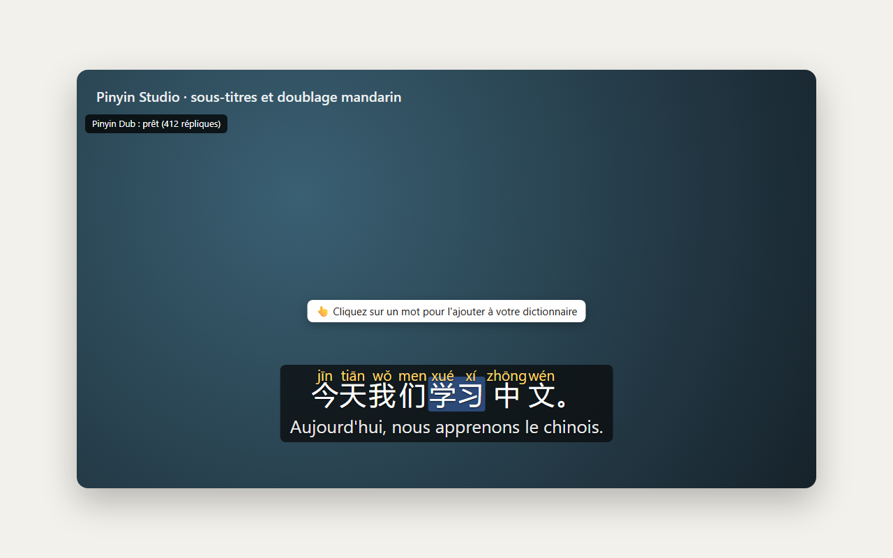
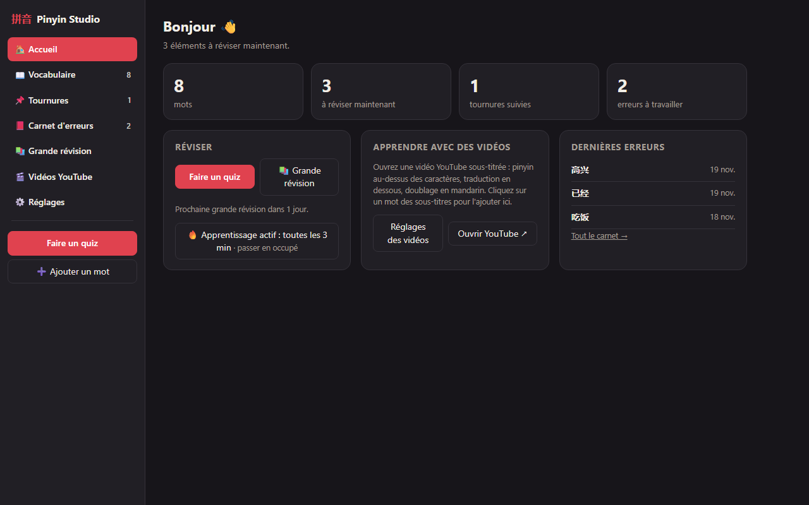

Pinyin Studio
Apprenez le mandarin avec les vidéos que vous aimez : pinyin sous les sous-titres, doublage, dictionnaire personnel et quiz au bon moment.
L'IA est incluse : rien à configurer

1Sur Microsoft Edge (recommandé)
Edge est déjà installé sur Windows, et c'est le navigateur qui a les meilleures voix chinoises pour le doublage.
- Ouvrez Microsoft Edge et allez sur la page de Pinyin Studio dans la boutique Edge Add-ons : lien bientôt disponible (l'extension est en cours de vérification chez Microsoft).
- Cliquez sur Obtenir, puis sur Ajouter l'extension. Aucun compte n'est nécessaire.
- Cliquez sur l'icône puzzle en haut à droite, puis sur l'œil à côté de Pinyin Studio pour l'épingler.
- Le tableau de bord s'ouvre tout seul : c'est prêt.
En attendant la boutique, la méthode ci-dessous marche aussi dans Edge (adresse edge://extensions).
2Sur Chrome, Brave, Opera, Vivaldi
On charge l'extension à la main, en mode développeur : c'est sans risque, et ça prend 3 minutes.
- Téléchargez pinyin-studio-1.0.0.zip.
- Clic droit sur le fichier → Extraire tout… → Extraire. Rangez le dossier obtenu dans Documents : ne le supprimez pas, le navigateur en a besoin.
- Tapez cette adresse dans la barre du navigateur :
- Chrome :
chrome://extensions - Edge :
edge://extensions - Brave :
brave://extensions - Opera :
opera://extensions - Vivaldi :
vivaldi://extensions
- Chrome :
- Activez Mode développeur (interrupteur en haut à droite ; à gauche sur Edge et Opera).
- Cliquez sur Charger l'extension non empaquetée et choisissez le dossier extrait (celui qui contient
manifest.json). - Épinglez l'icône via le puzzle en haut à droite, et c'est prêt.
Au redémarrage, Chrome peut afficher « Désactiver les extensions en mode développeur » : cliquez sur la croix pour garder l'extension. Firefox et Safari ne sont pas pris en charge pour l'instant.
3L'IA : rien à configurer
La correction des phrases et la vérification des mots fonctionnent dès l'installation.
Si un message indique que le service est saturé, réessayez une minute plus tard. Pour ne dépendre de personne, vous pouvez aussi mettre votre propre clé Gemini gratuite :
- Ouvrez aistudio.google.com et connectez-vous avec un compte Google.
- Cliquez sur Get API key, puis Create API key, et copiez la clé (elle commence par « AIza »).
- Dans Pinyin Studio : Tableau de bord → Réglages → IA, choisissez Ma propre clé Google Gemini, collez-la, puis Tester l'IA.
N'écrivez pas d'informations personnelles dans les quiz : le texte est envoyé à Google pour la correction.
4Premiers pas (5 minutes)
- Ajouter un mot : icône Pinyin Studio → onglet Ajouter. Tapez le pinyin (une barre propose les 4 tons : clic ou touches 1 à 4, « v » = ü), puis le sens que vous pensez, et Vérifier et ajouter.
- Faire un quiz : onglet Réviser → Faire un quiz maintenant. Ensuite, les quiz s'ouvrent tout seuls quand un mot est sur le point d'être oublié (toutes les 3 minutes en mode actif, 15 en mode occupé).
- Regarder une vidéo : ouvrez une vidéo YouTube qui a des sous-titres. Le pinyin s'affiche au-dessus des caractères, la traduction en dessous ; cliquez sur un mot pour l'ajouter à votre dictionnaire.
- Tout retrouver : le lien Tableau de bord ↗ en bas de la popup ouvre le vocabulaire, les tournures, le carnet d'erreurs, la grande révision et les réglages.
5Dépannage
| Problème | Solution |
|---|---|
| « Beaucoup de demandes » ou « service indisponible » | Réessayez une minute plus tard, ou mettez votre propre clé Gemini (étape 3). |
| Aucun sous-titre sur une vidéo | La vidéo n'a pas de sous-titres, ou YouTube ne propose pas leur traduction. Essayez une vidéo avec l'icône CC. |
| Pas de voix pour le doublage | Windows : Paramètres → Heure et langue → Voix → Ajouter des voix → Chinois (simplifié), puis redémarrez le navigateur. Sur Edge, choisissez une voix « Natural » dans l'onglet Vidéos. |
| Les quiz ne s'ouvrent pas | Vérifiez que les quiz ne sont pas en pause et que le navigateur est ouvert. Aucun quiz ne s'ouvre si aucun mot n'est à réviser. |
| Sous-titres ou quiz en double | Une ancienne version est encore active : désactivez-la dans la page des extensions. |
| L'extension a disparu (mode développeur) | Le dossier extrait a été déplacé ou supprimé : remettez-le en place et rechargez l'extension. |